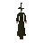
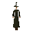

Witch

| Config name | witch2 |
| NPC id | 177 |
| Combat level | 25 |
| Hitpoints | 10 |
| Attack / Strength / Defence | 25 / 25 / 25 |
| Respawn | 100 ticks |
| Options | Attack |
| Category | witch |
| Wander range | 3 tiles from spawn |
| Max range | 5 tiles from spawn |
| Defined in | scripts/_unpack/225/all.npc |
| Bonuses | Magic def 3 |
Witch
The hat's a dead give away.
Show all 1 spawn on the world map → Open in knowledge graph →
Drops
No drops recorded.
Locations
| Area | Coordinates | Level | Count | Map |
|---|---|---|---|---|
| Shantay Pass | 3321, 3139 | 0 | 1 | view |
Related NPCs (category witch)

Witch